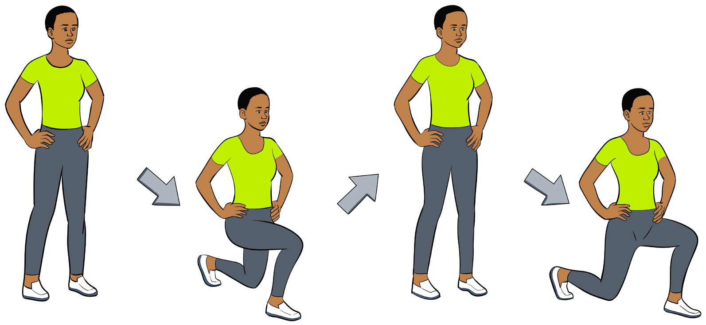

Flexibility
Flexibility refers to a degree of movement of a body joint towards its full range of motion. Poor flexibility limits the ability of a person to perform certain movements that require a highly stretched body. Good flexibility is a key component for preventing injuries. It can be measured by sit-and-reach test.
Exercises for flexibility
For you to be flexible, you have to perform stretching exercises. Here are some basics for the exercises that can be used to improve flexibility.
Forward lunges
Forward lunges can be performed by doing the following:
(i) Kneel on the left leg, placing the right leg forward at a right angle;
(ii) Lunge forward, keeping the back straight;
(iii) Stretch should be felt on the left groin;
(iv) Hold on the same pause for at least five seconds;
(v) Do the same procedures on the other leg; and
(vi) Repeat for at least three to six times.

a c
b
d
Figure 3.5: Forward lunges exercise